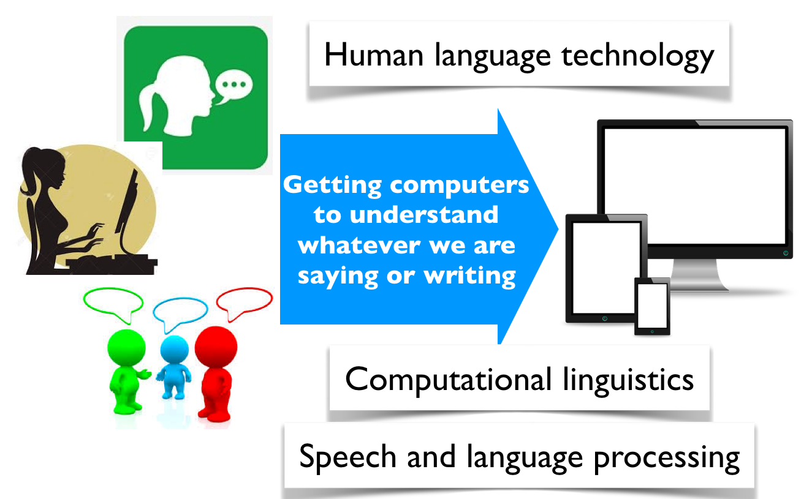
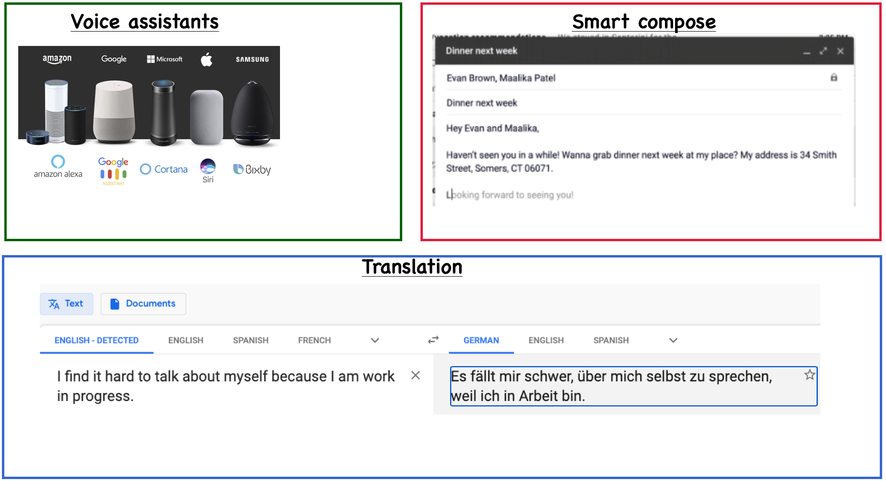
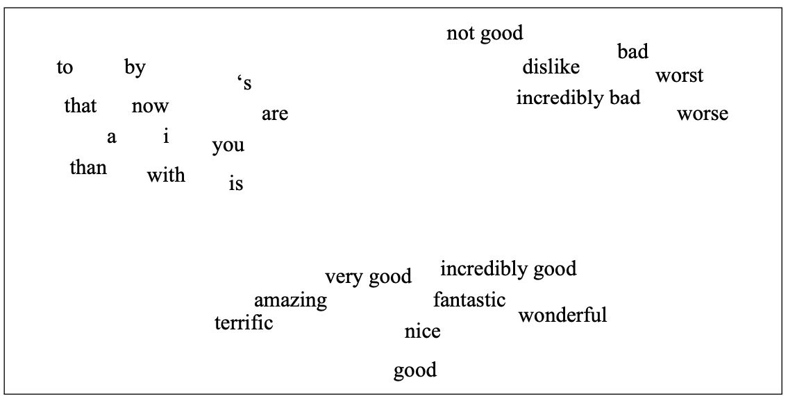
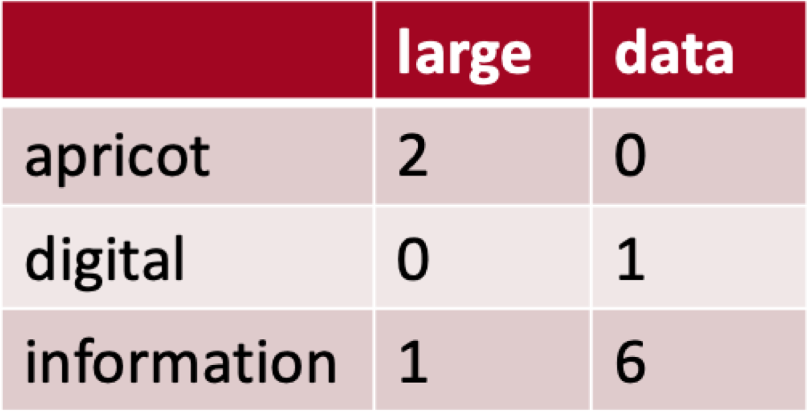
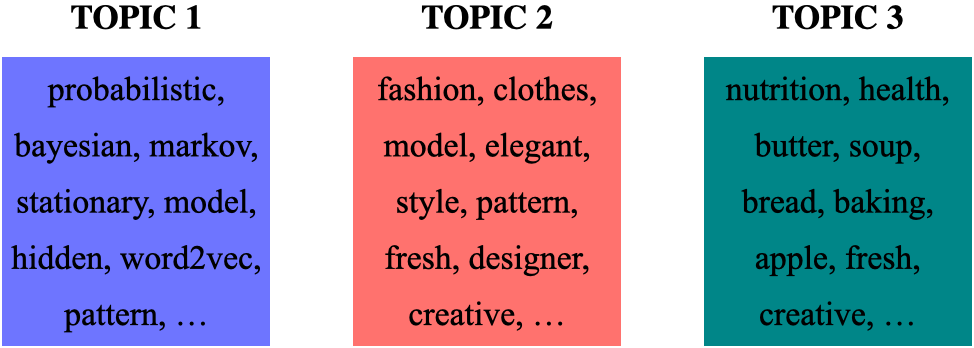
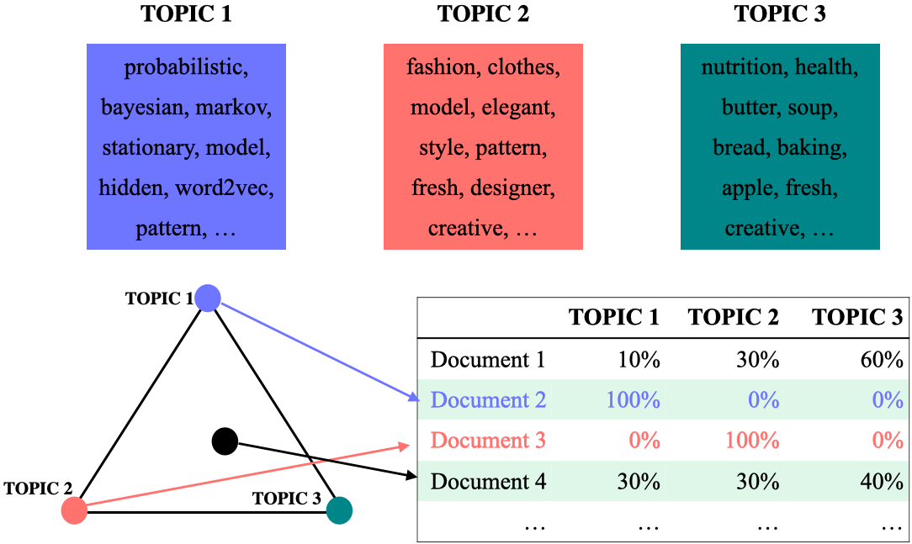

Lecture 16: Introduction to natural language processing¶
UBC 2020-21
Instructor: Varada Kolhatkar
## Imports
import os
import re
import string
import sys
import time
from collections import Counter, defaultdict
import IPython
import nltk
import numpy as np
import numpy.random as npr
import pandas as pd
from IPython.display import HTML
from ipywidgets import interactive
from nltk.corpus import stopwords
from nltk.tokenize import sent_tokenize, word_tokenize
from sklearn.feature_extraction.text import CountVectorizer
from sklearn.linear_model import LogisticRegression
from sklearn.pipeline import make_pipeline
Announcements¶
Final exam: December 19th at 12:00pm PHRM 1101
Homework 5 grades have been posted.
Homework 6 was due on Monday, Nov 15th at 11:59pm (submission window extended till November 16 at 10am.)
Homework 7 due Wednesday, Nov 17th at 11:59pm
It seems like many of you are quite overwhelmed. So I decided to skip one homework. We’ll only have one more homework after this.
Learning objectives¶
Broadly explain what is natural language processing (NLP).
Name some common NLP applications.
Explain the general idea of a vector space model.
Explain the difference between different word representations: term-term co-occurrence matrix representation and Word2Vec representation.
Describe the reasons and benefits of using pre-trained embeddings.
Load and use pre-trained word embeddings to find word similarities and analogies.
Demonstrate biases in embeddings and learn to watch out for such biases in pre-trained embeddings.
Use word embeddings in text classification and document clustering using
spaCy.Explain the general idea of topic modeling.
Describe the input and output of topic modeling.
Carry out basic text preprocessing using
spaCy.
What is Natural Language Processing (NLP)?¶
What should a search engine return when asked the following question?

What is Natural Language Processing (NLP)?¶

Everyday NLP applications¶

NLP in news¶
Often you’ll NLP in news. Some examples:
Why is NLP hard?¶
Language is complex and subtle.
Language is ambiguous at different levels.
Language understanding involves common-sense knowledge and real-world reasoning.
All the problems related to representation and reasoning in artificial intelligence arise in this domain.

Ambiguous news headlines¶
PROSTITUTES APPEAL TO POPE
appeal to means make a serious or urgent request or be attractive or interesting?
KICKING BABY CONSIDERED TO BE HEALTHY
kicking is used as an adjective or a verb?
MILK DRINKERS ARE TURNING TO POWDER
turning means becoming or take up?
Overall goal¶
Give you a quick introduction to you of this important field in artificial intelligence which extensively used machine learning.

Today’s plan
Word embeddings
Topic modeling
Basic text preprocessing
Word Embeddings¶
The idea is to represent word meaning so that similar words are close together.

(Attribution: Jurafsky and Martin 3rd edition)
Why do we care about word representation?¶
So far we have been talking about sentence or document representation.
Now we are going one step back and talking about word representation.
Although word representation cannot be directly used in text classification tasks such as sentiment analysis using tradition ML models, it’s good to know about word embeddings because they are so widely used.
They are quite useful in more advanced machine learning models such as recurrent neural networks.
Word meaning¶
A favourite topic of philosophers for centuries.
An example from legal domain: Are hockey gloves gloves or “articles of plastics”?
Canada (A.G.) v. Igloo Vikski Inc. was a tariff code case that made its way to the SCC (Supreme Court of Canada). The case disputed the definition of hockey gloves as either gloves or as "articles of plastics."

Word meaning: ML and NLP view¶
Modeling word meaning that allows us to
draw useful inferences to solve meaning-related problems
find relationship between words,
E.g., which words are similar, which ones have positive or negative connotations
Word representations¶
How do we represent words?¶
Suppose you are building a question answering system and you are given the following question and three candidate answers.
What kind of relationship between words would we like our representation to capture in order to arrive at the correct answer?
Question: How tall is Machu Picchu?
Candidate 1: Machu Picchu is 13.164 degrees south of the equator.
Candidate 2: The official height of Machu Picchu is 2,430 m.
Candidate 3: Machu Picchu is 80 kilometres (50 miles) northwest of Cusco.
Need a representation that captures relationships between words.¶
We will be looking at two such representations.
Sparse representation with term-term co-occurrence matrix
Dense representation with Word2Vec
Both are based on two ideas: distributional hypothesis and vector space model.
Distributional hypothesis¶
You shall know a word by the company it keeps.
If A and B have almost identical environments we say that they are synonyms.
Example:
Her child loves to play in the playground.
Her kid loves to play in the playground.
Vector space model¶
Model the meaning of a word by placing it into a vector space.
A standard way to represent meaning in NLP
The idea is to create embeddings of words so that distances among words in the vector space indicate the relationship between them.
(Attribution: Jurafsky and Martin 3rd edition)
Term-term co-occurrence matrix¶
So far we have been talking about documents and we created document-term co-occurrence matrix (e.g., bag-of-words representation of text).
We can also do this with words. The idea is to go through a corpus of text, keeping a count of all of the words that appear in context of each word (within a window).
An example:

(Credit: Jurafsky and Martin 3rd edition)
Visualizing word vectors and similarity¶

(Credit: Jurafsky and Martin 3rd edition)
The similarity is calculated using dot products between word vectors.
Example: \(\vec{\text{digital}}.\vec{\text{information}} = 0 \times 1 + 1\times 6 = 6\)
Higher the dot product more similar the words.
Visualizing word vectors and similarity¶
(Credit: Jurafsky and Martin 3rd edition)
The similarity is calculated using dot products between word vectors.
Example: \(\vec{\text{digital}}.\vec{\text{information}} = 0 \times 1 + 1\times 6 = 6\)
Higher the dot product more similar the words.
We can also calculate a normalized version of dot products. $\(similarity_{cosine}(w_1,w_2) = \frac{w_1.w_2}{\left\lVert w_1\right\rVert_2 \left\lVert w_2\right\rVert_2}\)$
### Let's build term-term co-occurrence matrix for our text.
sys.path.append("code/.")
from comat import CooccurrenceMatrix
from preprocessing import MyPreprocessor
corpus = [
"How tall is Machu Picchu?",
"Machu Picchu is 13.164 degrees south of the equator.",
"The official height of Machu Picchu is 2,430 m.",
"Machu Picchu is 80 kilometres (50 miles) northwest of Cusco.",
"It is 80 kilometres (50 miles) northwest of Cusco, on the crest of the mountain Machu Picchu, located about 2,430 metres (7,970 feet) above mean sea level, over 1,000 metres (3,300 ft) lower than Cusco, which has an elevation of 3,400 metres (11,200 ft).",
]
pp = MyPreprocessor()
pp_corpus = pp.preprocess_corpus(corpus)
cm = CooccurrenceMatrix(pp_corpus)
vocab, comat = cm.fit_transform()
words = [
key for key, value in sorted(vocab.items(), key=lambda item: (item[1], item[0]))
]
df = pd.DataFrame(comat.todense(), columns=words, index=words, dtype=np.int8)
df.head()
| tall | machu | picchu | 13.164 | degrees | south | equator | official | height | 2,430 | ... | mean | sea | level | 1,000 | 3,300 | ft | lower | elevation | 3,400 | 11,200 | |
|---|---|---|---|---|---|---|---|---|---|---|---|---|---|---|---|---|---|---|---|---|---|
| tall | 0 | 1 | 1 | 0 | 0 | 0 | 0 | 0 | 0 | 0 | ... | 0 | 0 | 0 | 0 | 0 | 0 | 0 | 0 | 0 | 0 |
| machu | 1 | 0 | 5 | 1 | 1 | 0 | 0 | 1 | 1 | 2 | ... | 0 | 0 | 0 | 0 | 0 | 0 | 0 | 0 | 0 | 0 |
| picchu | 1 | 5 | 0 | 1 | 1 | 1 | 0 | 1 | 1 | 2 | ... | 0 | 0 | 0 | 0 | 0 | 0 | 0 | 0 | 0 | 0 |
| 13.164 | 0 | 1 | 1 | 0 | 1 | 1 | 1 | 0 | 0 | 0 | ... | 0 | 0 | 0 | 0 | 0 | 0 | 0 | 0 | 0 | 0 |
| degrees | 0 | 1 | 1 | 1 | 0 | 1 | 1 | 0 | 0 | 0 | ... | 0 | 0 | 0 | 0 | 0 | 0 | 0 | 0 | 0 | 0 |
5 rows × 32 columns
from sklearn.metrics.pairwise import cosine_similarity
def similarity(word1, word2):
"""
Returns similarity score between word1 and word2
Arguments
---------
word1 -- (str)
The first word
word2 -- (str)
The second word
Returns
--------
None. Prints the similarity score between word1 and word2.
"""
vec1 = cm.get_word_vector(word1).todense().flatten()
vec2 = cm.get_word_vector(word2).todense().flatten()
v1 = np.squeeze(np.asarray(vec1))
v2 = np.squeeze(np.asarray(vec2))
print(
"The dot product between %s and %s is %0.2f and cosine similarity is %0.2f"
% (word1, word2, np.dot(v1, v2), cosine_similarity(vec1, vec2))
)
similarity("tall", "height")
similarity("tall", "official")
### Not very reliable similarity scores because we used only 4 sentences.
The dot product between tall and height is 2.00 and cosine similarity is 0.71
The dot product between tall and official is 2.00 and cosine similarity is 0.82
We are able to capture some similarities between words now.
That said similarities do not make much sense in the toy example above because we’re using a tiny corpus.
To find meaningful patterns of similarities between words, we need a large corpus.
Let’s try a bit larger corpus and check whether the similarities make sense.
import wikipedia
from nltk.tokenize import sent_tokenize, word_tokenize
corpus = []
queries = ["Machu Picchu", "human stature", "Everest"]
for i in range(len(queries)):
sents = sent_tokenize(wikipedia.page(queries[i]).content)
corpus.extend(sents)
print("Number of sentences in the corpus: ", len(sents))
Number of sentences in the corpus: 681
pp = MyPreprocessor()
pp_corpus = pp.preprocess_corpus(corpus)
cm = CooccurrenceMatrix(pp_corpus)
vocab, comat = cm.fit_transform()
words = [
key for key, value in sorted(vocab.items(), key=lambda item: (item[1], item[0]))
]
df = pd.DataFrame(comat.todense(), columns=words, index=words, dtype=np.int8)
df.head()
| machu | picchu | 15th-century | inca | citadel | located | eastern | cordillera | southern | peru | ... | panorama | drawing | imaging | panoramas | interactive | summitpost | format | quicktime | virtual | info-graphic | |
|---|---|---|---|---|---|---|---|---|---|---|---|---|---|---|---|---|---|---|---|---|---|
| machu | 0 | 92 | 1 | 6 | 2 | 2 | 1 | 0 | 1 | 5 | ... | 0 | 0 | 0 | 0 | 0 | 0 | 0 | 0 | 0 | 0 |
| picchu | 92 | 0 | 1 | 6 | 4 | 1 | 1 | 0 | 1 | 4 | ... | 0 | 0 | 0 | 0 | 0 | 0 | 0 | 0 | 0 | 0 |
| 15th-century | 1 | 1 | 0 | 1 | 1 | 1 | 0 | 0 | 0 | 0 | ... | 0 | 0 | 0 | 0 | 0 | 0 | 0 | 0 | 0 | 0 |
| inca | 6 | 6 | 1 | 0 | 1 | 1 | 1 | 0 | 0 | 2 | ... | 0 | 0 | 0 | 0 | 0 | 0 | 0 | 0 | 0 | 0 |
| citadel | 2 | 4 | 1 | 1 | 0 | 1 | 1 | 1 | 0 | 0 | ... | 0 | 0 | 0 | 0 | 0 | 0 | 0 | 0 | 0 | 0 |
5 rows × 5591 columns
similarity("tall", "height")
similarity("tall", "official")
The dot product between tall and height is 38.00 and cosine similarity is 0.13
The dot product between tall and official is 0.00 and cosine similarity is 0.00
Sparse vs. dense word vectors¶
Term-term co-occurrence matrices are long and sparse.
length |V| is usually large (e.g., > 50,000)
most elements are zero
OK because there are efficient ways to deal with sparse matrices.
Alternative¶
Learn short (~100 to 1000 dimensions) and dense vectors.
Short vectors may be easier to train with ML models (less weights to train).
They may generalize better.
In practice they work much better!
Success of Word2Vec¶
Able to capture complex relationships between words.
Example: What is the word that is similar to WOMAN in the same sense as KING is similar to MAN?
Perform a simple algebraic operations with the vector representation of words. \(\vec{X} = \vec{\text{KING}} − \vec{\text{MAN}} + \vec{\text{WOMAN}}\)
Search in the vector space for the word closest to \(\vec{X}\) measured by cosine distance.

(Credit: Mikolov et al. 2013)
We can create a dense representation with a library called
gensim.
conda install -c anaconda gensim
from gensim.models import Word2Vec
sentences = [["cat", "say", "meow"], ["dog", "say", "woof"]]
model = Word2Vec(sentences, min_count=1)
/Users/kvarada/opt/miniconda3/envs/cpsc330/lib/python3.9/site-packages/gensim/similarities/__init__.py:15: UserWarning: The gensim.similarities.levenshtein submodule is disabled, because the optional Levenshtein package <https://pypi.org/project/python-Levenshtein/> is unavailable. Install Levenhstein (e.g. `pip install python-Levenshtein`) to suppress this warning.
warnings.warn(msg)
Let’s look at the word vector of the word cat.
model.wv["cat"]
array([-0.00713902, 0.00124103, -0.00717672, -0.00224462, 0.0037193 ,
0.00583312, 0.00119818, 0.00210273, -0.00411039, 0.00722533,
-0.00630704, 0.00464721, -0.00821997, 0.00203647, -0.00497705,
-0.00424769, -0.00310899, 0.00565521, 0.0057984 , -0.00497465,
0.00077333, -0.00849578, 0.00780981, 0.00925729, -0.00274233,
0.00080022, 0.00074665, 0.00547788, -0.00860608, 0.00058445,
0.00686942, 0.00223159, 0.00112468, -0.00932216, 0.00848237,
-0.00626413, -0.00299237, 0.00349379, -0.00077263, 0.00141129,
0.00178199, -0.0068289 , -0.00972481, 0.00904058, 0.00619805,
-0.00691293, 0.00340348, 0.00020606, 0.00475374, -0.00711994,
0.00402695, 0.00434743, 0.00995737, -0.00447374, -0.00138927,
-0.00731732, -0.00969783, -0.00908026, -0.00102276, -0.00650329,
0.00484973, -0.00616403, 0.00251919, 0.00073944, -0.00339216,
-0.00097922, 0.00997912, 0.00914589, -0.00446183, 0.00908303,
-0.00564176, 0.00593092, -0.00309722, 0.00343175, 0.00301723,
0.00690046, -0.00237388, 0.00877504, 0.00758943, -0.00954765,
-0.00800821, -0.0076379 , 0.00292326, -0.00279472, -0.00692952,
-0.00812826, 0.00830918, 0.00199049, -0.00932802, -0.00479272,
0.00313674, -0.00471321, 0.00528084, -0.00423344, 0.00264179,
-0.00804569, 0.00620989, 0.00481889, 0.00078719, 0.00301345],
dtype=float32)
What’s the most similar word to the word cat?
model.wv.most_similar("cat")
[('dog', 0.17018885910511017),
('woof', 0.004503009375184774),
('say', -0.027750369161367416),
('meow', -0.04461709037423134)]
This is good. But if you want good and meaningful representations of words you need to train models on a large corpus such as the whole Wikipedia, which is computationally intensive.
So instead of training our own models, we use the pre-trained embeddings. These are the word embeddings people have trained embeddings on huge corpora and made them available for us to use.
Let’s try out Google news pre-trained word vectors.
# It'll take a while to run this when you try it out for the first time.
import gensim.downloader as api
google_news_vectors = api.load("word2vec-google-news-300")
---------------------------------------------------------------------------
KeyboardInterrupt Traceback (most recent call last)
/var/folders/80/kr9rkqfj4w78h49djkz8yy9r0000gp/T/ipykernel_16765/1679810779.py in <module>
2 import gensim.downloader as api
3
----> 4 google_news_vectors = api.load("word2vec-google-news-300")
~/opt/miniconda3/envs/cpsc330/lib/python3.9/site-packages/gensim/downloader.py in load(name, return_path)
501 sys.path.insert(0, BASE_DIR)
502 module = __import__(name)
--> 503 return module.load_data()
504
505
~/gensim-data/word2vec-google-news-300/__init__.py in load_data()
6 def load_data():
7 path = os.path.join(base_dir, 'word2vec-google-news-300', "word2vec-google-news-300.gz")
----> 8 model = KeyedVectors.load_word2vec_format(path, binary=True)
9 return model
~/opt/miniconda3/envs/cpsc330/lib/python3.9/site-packages/gensim/models/keyedvectors.py in load_word2vec_format(cls, fname, fvocab, binary, encoding, unicode_errors, limit, datatype, no_header)
1628
1629 """
-> 1630 return _load_word2vec_format(
1631 cls, fname, fvocab=fvocab, binary=binary, encoding=encoding, unicode_errors=unicode_errors,
1632 limit=limit, datatype=datatype, no_header=no_header,
~/opt/miniconda3/envs/cpsc330/lib/python3.9/site-packages/gensim/models/keyedvectors.py in _load_word2vec_format(cls, fname, fvocab, binary, encoding, unicode_errors, limit, datatype, no_header, binary_chunk_size)
1907
1908 if binary:
-> 1909 _word2vec_read_binary(
1910 fin, kv, counts, vocab_size, vector_size, datatype, unicode_errors, binary_chunk_size,
1911 )
~/opt/miniconda3/envs/cpsc330/lib/python3.9/site-packages/gensim/models/keyedvectors.py in _word2vec_read_binary(fin, kv, counts, vocab_size, vector_size, datatype, unicode_errors, binary_chunk_size)
1802 new_chunk = fin.read(binary_chunk_size)
1803 chunk += new_chunk
-> 1804 processed_words, chunk = _add_bytes_to_kv(
1805 kv, counts, chunk, vocab_size, vector_size, datatype, unicode_errors)
1806 tot_processed_words += processed_words
~/opt/miniconda3/envs/cpsc330/lib/python3.9/site-packages/gensim/models/keyedvectors.py in _add_bytes_to_kv(kv, counts, chunk, vocab_size, vector_size, datatype, unicode_errors)
1788 word = word.lstrip('\n')
1789 vector = frombuffer(chunk, offset=i_vector, count=vector_size, dtype=REAL).astype(datatype)
-> 1790 _add_word_to_kv(kv, counts, word, vector, vocab_size)
1791 start = i_vector + bytes_per_vector
1792 processed_words += 1
~/opt/miniconda3/envs/cpsc330/lib/python3.9/site-packages/gensim/models/keyedvectors.py in _add_word_to_kv(kv, counts, word, weights, vocab_size)
1768 logger.warning("vocabulary file is incomplete: '%s' is missing", word)
1769 word_count = None
-> 1770 kv.set_vecattr(word, 'count', word_count)
1771
1772
~/opt/miniconda3/envs/cpsc330/lib/python3.9/site-packages/gensim/models/keyedvectors.py in set_vecattr(self, key, attr, val)
328 """
329 self.allocate_vecattrs(attrs=[attr], types=[type(val)])
--> 330 index = self.get_index(key)
331 self.expandos[attr][index] = val
332
~/opt/miniconda3/envs/cpsc330/lib/python3.9/site-packages/gensim/models/keyedvectors.py in get_index(self, key, default)
386
387 """
--> 388 val = self.key_to_index.get(key, -1)
389 if val >= 0:
390 return val
KeyboardInterrupt:
print("Size of vocabulary: ", len(google_news_vectors))
Size of vocabulary: 3000000
google_news_vectorsabove has 300 dimensional word vectors for 3,000,000 unique words from Google news.What can we do with these word vectors?
Finding similar words¶
Given word \(w\), search in the vector space for the word closest to \(w\) as measured by cosine distance.
google_news_vectors.most_similar("UBC")
[('UVic', 0.7886475920677185),
('SFU', 0.7588528394699097),
('Simon_Fraser', 0.7356574535369873),
('UFV', 0.6880435943603516),
('VIU', 0.6778583526611328),
('Kwantlen', 0.6771429181098938),
('UBCO', 0.6734487414360046),
('UPEI', 0.6731126308441162),
('UBC_Okanagan', 0.6709133982658386),
('Lakehead_University', 0.6622507572174072)]
google_news_vectors.most_similar("information")
[('info', 0.7363681793212891),
('infomation', 0.680029571056366),
('infor_mation', 0.673384964466095),
('informaiton', 0.6639009118080139),
('informa_tion', 0.6601256728172302),
('informationon', 0.6339334845542908),
('informationabout', 0.6320980191230774),
('Information', 0.6186580657958984),
('informaion', 0.6093292236328125),
('details', 0.6063088774681091)]
If you want to extract all documents containing information or similar words, you could use this information.
Finding similarity scores between words¶
google_news_vectors.similarity("Canada", "hockey")
0.27610135
google_news_vectors.similarity("China", "hockey")
0.060384665
word_pairs = [
("height", "tall"),
("pineapple", "mango"),
("pineapple", "juice"),
("sun", "robot"),
("GPU", "lion"),
]
for pair in word_pairs:
print(
"The similarity between %s and %s is %0.3f"
% (pair[0], pair[1], google_news_vectors.similarity(pair[0], pair[1]))
)
The similarity between height and tall is 0.473
The similarity between pineapple and mango is 0.668
The similarity between pineapple and juice is 0.418
The similarity between sun and robot is 0.029
The similarity between GPU and lion is 0.002
def analogy(word1, word2, word3, model=google_news_vectors):
"""
Returns analogy word using the given model.
Parameters
--------------
word1 : (str)
word1 in the analogy relation
word2 : (str)
word2 in the analogy relation
word3 : (str)
word3 in the analogy relation
model :
word embedding model
Returns
---------------
pd.dataframe
"""
print("%s : %s :: %s : ?" % (word1, word2, word3))
sim_words = model.most_similar(positive=[word3, word2], negative=[word1])
return pd.DataFrame(sim_words, columns=["Analogy word", "Score"])
analogy("man", "king", "woman")
man : king :: woman : ?
| Analogy word | Score | |
|---|---|---|
| 0 | queen | 0.711819 |
| 1 | monarch | 0.618967 |
| 2 | princess | 0.590243 |
| 3 | crown_prince | 0.549946 |
| 4 | prince | 0.537732 |
| 5 | kings | 0.523684 |
| 6 | Queen_Consort | 0.523595 |
| 7 | queens | 0.518113 |
| 8 | sultan | 0.509859 |
| 9 | monarchy | 0.508741 |
analogy("Montreal", "Canadiens", "Vancouver")
Montreal : Canadiens :: Vancouver : ?
| Analogy word | Score | |
|---|---|---|
| 0 | Canucks | 0.821327 |
| 1 | Vancouver_Canucks | 0.750401 |
| 2 | Calgary_Flames | 0.705470 |
| 3 | Leafs | 0.695783 |
| 4 | Maple_Leafs | 0.691617 |
| 5 | Thrashers | 0.687504 |
| 6 | Avs | 0.681716 |
| 7 | Sabres | 0.665307 |
| 8 | Blackhawks | 0.664625 |
| 9 | Habs | 0.661023 |
analogy("Toronto", "UofT", "Vancouver")
Toronto : UofT :: Vancouver : ?
| Analogy word | Score | |
|---|---|---|
| 0 | SFU | 0.579245 |
| 1 | UVic | 0.576921 |
| 2 | UBC | 0.571431 |
| 3 | Simon_Fraser | 0.543464 |
| 4 | Langara_College | 0.541347 |
| 5 | UVIC | 0.520495 |
| 6 | Grant_MacEwan | 0.517273 |
| 7 | UFV | 0.514150 |
| 8 | Ubyssey | 0.510421 |
| 9 | Kwantlen | 0.503807 |

Implicit biases and stereotypes in word embeddings¶
Reflect gender stereotypes present in broader society.
They may also amplify these stereotypes because of their widespread usage.
See the paper Man is to Computer Programmer as Woman is to ….
analogy("man", "computer_programmer", "woman")
man : computer_programmer :: woman : ?
| Analogy word | Score | |
|---|---|---|
| 0 | homemaker | 0.562712 |
| 1 | housewife | 0.510505 |
| 2 | graphic_designer | 0.505180 |
| 3 | schoolteacher | 0.497949 |
| 4 | businesswoman | 0.493489 |
| 5 | paralegal | 0.492551 |
| 6 | registered_nurse | 0.490797 |
| 7 | saleswoman | 0.488163 |
| 8 | electrical_engineer | 0.479773 |
| 9 | mechanical_engineer | 0.475540 |
Most of the modern embeddings are de-biased.
(NLP)### Other pre-trained embeddings
A number of pre-trained word embeddings are available. The most popular ones are:
-
trained on several corpora using the word2vec algorithm
-
pretrained embeddings for 12 languages
-
trained using the GloVe algorithm
published by Stanford University
fastText pre-trained embeddings for 294 languages
trained using the fastText algorithm
published by Facebook
Note
Note that these pre-trained word vectors are of big size (in several gigabytes).
Here is a list of all pre-trained embeddings available with gensim.
import gensim.downloader
print(list(gensim.downloader.info()["models"].keys()))
['fasttext-wiki-news-subwords-300', 'conceptnet-numberbatch-17-06-300', 'word2vec-ruscorpora-300', 'word2vec-google-news-300', 'glove-wiki-gigaword-50', 'glove-wiki-gigaword-100', 'glove-wiki-gigaword-200', 'glove-wiki-gigaword-300', 'glove-twitter-25', 'glove-twitter-50', 'glove-twitter-100', 'glove-twitter-200', '__testing_word2vec-matrix-synopsis']
Word vectors with spaCy¶
spaCy also gives you access to word vectors with bigger models:
en_core_web_mdoren_core_web_lrspaCy’s pre-trained embeddings are trained on OntoNotes corpus.This corpus has a collection of different styles of texts such as telephone conversations, newswire, newsgroups, broadcast news, broadcast conversation, weblogs, religious texts.
Let’s try it out.
import spacy
nlp = spacy.load("en_core_web_md")
doc = nlp("pineapple")
doc.vector
array([-2.8445e-01, 5.5363e-01, 4.9800e-01, -2.7769e-01, 9.3481e-02,
5.8978e-01, -6.1267e-01, 1.5415e-01, 3.7752e-01, 1.4348e-01,
-2.0126e-01, 2.6869e-01, -7.2758e-01, 2.4405e-01, 3.5321e-01,
-3.8314e-01, 1.8920e-01, 9.0860e-01, 2.0685e-01, 6.7174e-02,
4.9190e-01, 4.8224e-01, 1.2929e-01, 4.9490e-01, -9.3981e-02,
-6.0443e-01, 2.8314e-01, -7.4459e-02, 5.9333e-02, -9.5484e-01,
-1.2755e-01, 1.1871e-01, 2.9725e-01, -1.8604e-01, -4.9672e-01,
-1.4352e-01, -1.2770e-02, 1.0423e-01, -6.7861e-01, 7.6421e-01,
2.0364e-02, -3.7836e-02, 2.9399e-01, -4.1602e-01, 3.1965e-01,
9.8503e-01, -6.8950e-02, -4.0057e-01, -1.3972e-01, 3.2916e-01,
-8.3725e-02, 7.1081e-02, 4.5407e-01, -6.0930e-02, 8.5099e-01,
-7.3595e-01, 3.5860e-01, -1.7554e-01, -1.5838e-01, 3.1525e-02,
-1.4029e-01, 9.3486e-02, 4.2341e-01, 2.2277e-01, -8.6968e-02,
-4.4123e-01, 1.1326e-01, 1.1435e-01, -8.7185e-01, 5.2618e-01,
-8.7317e-02, 8.8284e-01, -2.1643e-01, 4.1260e-01, -1.9629e-01,
2.4883e-01, 8.2752e-02, -1.0800e-01, -3.7362e-01, -2.0995e-01,
7.9307e-02, -2.3805e-01, -1.8537e-01, -1.1211e-01, -8.4294e-02,
-2.9430e-01, 1.2991e+00, 8.2207e-01, -8.0108e-01, -3.9065e-01,
-8.9309e-02, -3.7571e-01, 5.4184e-01, -3.5247e-02, -2.2929e-01,
6.1834e-01, -1.7637e-01, -1.0375e-01, -5.3831e-01, 2.0187e-01,
4.1651e-01, -4.8564e-01, -9.3836e-02, -1.6272e-01, -2.3528e-01,
-1.0950e+00, 1.7226e-01, -5.8347e-01, 1.0375e+00, 3.8504e-01,
-4.3338e-01, -2.8801e-01, -9.3194e-01, 1.1582e-01, 2.1183e-01,
-4.7209e-02, 5.2106e-02, 1.0386e-01, 3.1998e-01, 3.3064e-01,
-7.5731e-02, 1.5550e-01, -1.3200e-01, -4.2069e-01, -4.0630e-01,
-3.9150e-02, -1.1429e-01, 7.1862e-02, -4.1747e-01, -3.3113e-02,
-5.8413e-01, -5.5429e-01, -4.2042e-01, -1.1280e-02, -3.3124e-01,
-9.0115e-02, 3.8209e-01, 1.2274e-01, -3.2571e-01, 3.5727e-02,
-2.1267e+00, 6.5307e-01, -8.7850e-02, 2.7738e-01, -3.8208e-01,
-6.4254e-02, -3.8063e-01, 7.2693e-01, 2.5506e-01, -4.4696e-01,
5.4132e-01, 1.2553e-01, 5.2933e-01, 3.7021e-01, -1.0748e+00,
-5.3942e-01, 3.4178e-01, 1.5028e-01, 3.1055e-01, 6.1673e-01,
-9.9166e-02, 4.2590e-01, 1.4452e-01, -1.6359e-01, -1.5430e-01,
-8.1012e-05, -7.2212e-02, -1.7403e-01, 1.6741e-01, 2.3766e-01,
2.2990e-01, 3.2401e-01, 3.2437e-01, 1.4617e-01, -8.6237e-01,
-1.6606e-01, 2.5771e-01, -2.3734e-01, 3.6835e-01, -6.2753e-01,
-2.7425e-01, -1.2848e-01, 2.9455e-01, -2.4697e-01, -3.8050e-01,
-3.1025e-01, -2.7280e-01, -4.8886e-01, -5.8880e-01, -1.1161e-01,
-8.8502e-01, -2.7199e-02, -3.8848e-02, -2.2087e-01, -1.6948e-01,
-2.2928e-01, 6.5381e-01, 1.0211e-01, -2.4038e-01, 3.0906e-01,
-6.8702e-01, 9.5880e-02, 5.4251e-01, 2.5873e-01, 3.2799e-01,
8.3257e-02, 3.0840e-01, 3.2223e-01, 5.4355e-01, 7.9113e-01,
-7.5587e-02, 4.0929e-01, 3.6541e-01, -2.4388e-02, -6.5300e-01,
1.9694e-01, -4.9399e-02, -3.0366e-01, -1.9463e-01, -2.2815e-01,
-6.4144e-01, 2.7839e-02, 5.5869e-01, 3.9416e-01, 5.1166e-01,
1.4871e-01, -2.2047e-01, 9.8443e-02, -2.8448e-01, 1.8304e-02,
-7.6165e-01, -1.8388e-01, -2.8458e-01, 1.3345e-01, -5.5309e-01,
-4.3729e-01, 7.7534e-02, -4.9492e-01, 4.6410e-01, 2.4458e-01,
-1.6128e-01, -6.6307e-01, -8.2413e-01, -3.3230e-01, -9.4846e-02,
-1.1402e-01, 1.6437e-01, -1.4815e-01, 9.4412e-03, 4.3647e-01,
-1.3735e-01, 5.2660e-02, -4.8225e-01, 3.3501e-01, -1.4767e-01,
3.3204e-01, 3.3985e-01, 1.5218e-01, 3.5595e-01, 1.4562e-01,
-1.3912e-01, -5.4815e-02, -5.7572e-01, -2.6978e-01, -1.4739e-01,
-2.7083e-01, -4.4642e-01, 2.3675e-02, -7.0934e-01, -3.0456e-01,
-3.2839e-01, -1.1621e-02, 1.7080e-01, 7.2882e-02, -4.0110e-01,
8.1377e-01, -3.8940e-01, 3.7111e-01, -6.4290e-01, 4.0496e-01,
2.7992e-02, 1.7528e-01, 3.3878e-01, 4.3610e-01, 4.3892e-01,
1.5003e-01, 4.4302e-01, 4.0898e-01, 3.8504e-01, -1.5575e-01,
2.0590e-01, 1.0659e-02, -2.5892e-01, -1.3161e-01, -5.7390e-01,
6.2052e-01, -2.7414e-01, -1.0214e+00, -5.5313e-02, 5.6540e-01],
dtype=float32)
Representing documents using word embeddings¶
Assuming that we have reasonable representations of words.
How do we represent meaning of paragraphs or documents?
Two simple approaches
Averaging embeddings
Concatenating embeddings
Averaging embeddings¶
All empty promises
\((embedding(all) + embedding(empty) + embedding(promise))/3\)
Average embeddings with spaCy¶
We can do this conveniently with spaCy.
We need
en_core_web_mdmodel to access word vectors.You can download the model by going to command line and in your course
condaenvironment and downloaden_core_web_mdas follows.
conda activate cpsc330
python -m spacy download en_core_web_md
We can access word vectors for individual words in spaCy as follows.
nlp("empty").vector[0:10]
array([ 1.0127 , -0.20527 , -0.24555 , -0.076636, 0.11981 , 0.21642 ,
-0.55584 , 0.020206, 0.39778 , 1.7218 ], dtype=float32)
We can get average embeddings for a sentence or a document in spaCy as follows:
s = "All empty promises"
doc = nlp(s)
avg_sent_emb = doc.vector
print(avg_sent_emb.shape)
print("Vector for: {}\n{}".format((s), (avg_sent_emb[0:10])))
(300,)
Vector for: All empty promises
[ 0.28903252 -0.09684668 -0.11497 -0.26554868 0.01983 -0.111594
-0.10229333 0.126915 0.17705734 2.1837332 ]
Similarity between documents¶
We can also get similarity between documents as follows.
Note that this is based on average embeddings of each sentence.
doc1 = nlp("Deep learning is very popular these days.")
doc2 = nlp("Machine learning is dominated by neural networks.")
doc3 = nlp("A home-made fresh bread with butter and cheese.")
# Similarity of two documents
print(doc1, "<->", doc2, doc1.similarity(doc2))
print(doc2, "<->", doc3, doc2.similarity(doc3))
Deep learning is very popular these days. <-> Machine learning is dominated by neural networks. 0.7564516644025884
Machine learning is dominated by neural networks. <-> A home-made fresh bread with butter and cheese. 0.5363564587815752
Do these scores make sense?
There are no common words, but we are still able to identify that doc1 and doc2 are more similar that doc2 and doc3.
You can use such average embedding representation in text classification tasks.
Airline sentiment analysis using average embedding representation¶
Let’s try average embedding representation for airline sentiment analysis.
We used this dataset last week so you should already have it in the data directory. If not you can download it here.
df = pd.read_csv("data/Airline-Sentiment-2-w-AA.csv", encoding="ISO-8859-1")
from sklearn.model_selection import cross_validate, train_test_split
train_df, test_df = train_test_split(df, test_size=0.2, random_state=123)
X_train, y_train = train_df["text"], train_df["airline_sentiment"]
X_test, y_test = test_df["text"], test_df["airline_sentiment"]
train_df.head()
| _unit_id | _golden | _unit_state | _trusted_judgments | _last_judgment_at | airline_sentiment | airline_sentiment:confidence | negativereason | negativereason:confidence | airline | airline_sentiment_gold | name | negativereason_gold | retweet_count | text | tweet_coord | tweet_created | tweet_id | tweet_location | user_timezone | |
|---|---|---|---|---|---|---|---|---|---|---|---|---|---|---|---|---|---|---|---|---|
| 5789 | 681455792 | False | finalized | 3 | 2/25/15 4:21 | negative | 1.0 | Can't Tell | 0.6667 | Southwest | NaN | mrssuperdimmock | NaN | 0 | @SouthwestAir link doesn't work | NaN | 2/19/15 18:53 | 5.686040e+17 | Lake Arrowhead, CA | Pacific Time (US & Canada) |
| 8918 | 681459957 | False | finalized | 3 | 2/25/15 9:45 | neutral | 1.0 | NaN | NaN | Delta | NaN | labeles | NaN | 0 | @JetBlue okayyyy. But I had huge irons on way ... | NaN | 2/17/15 10:18 | 5.677500e+17 | NaN | NaN |
| 11688 | 681462990 | False | finalized | 3 | 2/25/15 9:53 | negative | 1.0 | Customer Service Issue | 0.6727 | US Airways | NaN | DropMeAnywhere | NaN | 0 | @USAirways They're all reservations numbers an... | [0.0, 0.0] | 2/17/15 14:50 | 5.678190e+17 | Here, There and Everywhere | Arizona |
| 413 | 681448905 | False | finalized | 3 | 2/25/15 10:10 | neutral | 1.0 | NaN | NaN | Virgin America | NaN | jsamaudio | NaN | 0 | @VirginAmerica no A's channel this year? | NaN | 2/18/15 12:25 | 5.681440e+17 | St. Francis (Calif.) | Pacific Time (US & Canada) |
| 4135 | 681454122 | False | finalized | 3 | 2/25/15 10:08 | negative | 1.0 | Bad Flight | 0.3544 | United | NaN | CajunSQL | NaN | 0 | @united missed it. Incoming on time, then Sat... | NaN | 2/17/15 14:20 | 5.678110e+17 | Baton Rouge, LA | NaN |
Bag-of-words representation for sentiment analysis¶
pipe = make_pipeline(
CountVectorizer(stop_words="english"), LogisticRegression(max_iter=1000)
)
pipe.named_steps["countvectorizer"].fit(X_train)
X_train_transformed = pipe.named_steps["countvectorizer"].transform(X_train)
print("Data matrix shape:", X_train_transformed.shape)
pipe.fit(X_train, y_train);
Data matrix shape: (11712, 13064)
print("Train accuracy {:.2f}".format(pipe.score(X_train, y_train)))
print("Test accuracy {:.2f}".format(pipe.score(X_test, y_test)))
Train accuracy 0.94
Test accuracy 0.80
Sentiment analysis with average embedding representation¶
Let’s see how can we get word vectors using
spaCy.Let’s create average embedding representation for each example.
X_train_embeddings = pd.DataFrame([text.vector for text in nlp.pipe(X_train)])
X_test_embeddings = pd.DataFrame([text.vector for text in nlp.pipe(X_test)])
We have reduced dimensionality from 13,064 to 300!
X_train_embeddings.shape
(11712, 300)
X_train_embeddings.head()
| 0 | 1 | 2 | 3 | 4 | 5 | 6 | 7 | 8 | 9 | ... | 290 | 291 | 292 | 293 | 294 | 295 | 296 | 297 | 298 | 299 | |
|---|---|---|---|---|---|---|---|---|---|---|---|---|---|---|---|---|---|---|---|---|---|
| 0 | -0.102596 | 0.089241 | -0.236022 | 0.030403 | -0.183757 | 0.188970 | -0.057322 | -0.194976 | -0.025315 | 1.887160 | ... | -0.186171 | -0.001768 | 0.088228 | 0.095176 | 0.195018 | -0.085129 | -0.113560 | -0.108034 | 0.095647 | 0.274220 |
| 1 | -0.063396 | 0.124589 | -0.122292 | -0.189419 | -0.101237 | 0.002607 | 0.032192 | -0.151461 | -0.055412 | 1.796026 | ... | -0.183419 | -0.016063 | -0.005495 | -0.045449 | 0.092108 | 0.052184 | 0.099207 | 0.011452 | 0.004731 | 0.065721 |
| 2 | -0.064436 | 0.148900 | -0.170613 | -0.155509 | 0.216841 | 0.002881 | 0.078774 | -0.123730 | -0.041174 | 2.200783 | ... | -0.276544 | 0.022344 | -0.029640 | 0.003638 | 0.070680 | -0.000402 | -0.029196 | -0.033838 | 0.040326 | 0.118550 |
| 3 | -0.029201 | 0.253583 | -0.020073 | 0.035106 | 0.027043 | -0.122413 | 0.076435 | -0.253022 | -0.044745 | 1.879360 | ... | -0.070406 | -0.012429 | -0.075428 | -0.106797 | 0.218251 | -0.218904 | -0.120035 | -0.085280 | 0.002369 | 0.034781 |
| 4 | 0.077888 | 0.213935 | -0.108230 | 0.056640 | 0.071779 | 0.035684 | -0.034920 | -0.154641 | -0.004615 | 1.916412 | ... | -0.063743 | 0.002112 | -0.026977 | -0.102208 | 0.037013 | -0.101183 | -0.003163 | 0.025034 | -0.087998 | 0.123148 |
5 rows × 300 columns
Sentiment classification using average embeddings¶
What are the train and test accuracies with average word embedding representation?
The accuracy is a bit better with less overfitting.
Note that we are using transfer learning here.
The embeddings are trained on a completely different corpus.
lgr = LogisticRegression(max_iter=1000)
lgr.fit(X_train_embeddings, y_train)
print("Train accuracy {:.2f}".format(lgr.score(X_train_embeddings, y_train)))
print("Test accuracy {:.2f}".format(lgr.score(X_test_embeddings, y_test)))
Train accuracy 0.81
Test accuracy 0.81
Sentiment classification using advanced sentence representations¶
Since, representing documents is so essential for text classification tasks, there are more advanced methods for document representation.
In homework 7, you also explore sentence embedding representation.
from sentence_transformers import SentenceTransformer
embedder = SentenceTransformer("paraphrase-distilroberta-base-v1")
emb_sents = embedder.encode("all empty promises")
emb_sents.shape
(768,)
emb_train = embedder.encode(train_df["text"].tolist())
emb_train_df = pd.DataFrame(emb_train, index=train_df.index)
emb_train_df
| 0 | 1 | 2 | 3 | 4 | 5 | 6 | 7 | 8 | 9 | ... | 758 | 759 | 760 | 761 | 762 | 763 | 764 | 765 | 766 | 767 | |
|---|---|---|---|---|---|---|---|---|---|---|---|---|---|---|---|---|---|---|---|---|---|
| 5789 | -0.120494 | 0.250262 | -0.022795 | -0.116368 | 0.078650 | 0.037357 | -0.251341 | 0.321429 | -0.143984 | -0.123487 | ... | 0.199151 | -0.150143 | 0.167078 | -0.407671 | -0.066161 | 0.049514 | 0.019385 | -0.357601 | 0.125996 | 0.381073 |
| 8918 | -0.182954 | 0.118282 | 0.066341 | -0.136099 | 0.094947 | -0.121303 | 0.069233 | -0.097500 | 0.025739 | -0.367980 | ... | 0.113612 | 0.114661 | 0.049926 | 0.256736 | -0.118687 | -0.190720 | 0.011986 | -0.141883 | -0.230142 | 0.024899 |
| 11688 | -0.032988 | 0.630251 | -0.079516 | 0.148981 | 0.194709 | -0.226264 | -0.043630 | 0.217398 | -0.010716 | 0.069644 | ... | 0.676791 | 0.244484 | 0.051042 | 0.064099 | -0.146945 | 0.090878 | -0.090059 | 0.077212 | -0.209226 | 0.308773 |
| 413 | -0.119259 | 0.172168 | 0.098698 | 0.319859 | 0.415475 | 0.248360 | -0.025923 | 0.385350 | 0.066414 | -0.334289 | ... | -0.128482 | -0.232446 | -0.077805 | 0.181328 | 0.123244 | -0.143693 | 0.660456 | -0.048714 | 0.204774 | 0.163496 |
| 4135 | 0.094240 | 0.360193 | 0.213747 | 0.363690 | 0.275521 | 0.134936 | -0.276319 | 0.009336 | -0.021523 | -0.258992 | ... | 0.474885 | 0.242125 | 0.294532 | 0.279014 | 0.037831 | 0.089761 | -0.548748 | -0.049258 | 0.154525 | 0.141268 |
| ... | ... | ... | ... | ... | ... | ... | ... | ... | ... | ... | ... | ... | ... | ... | ... | ... | ... | ... | ... | ... | ... |
| 5218 | -0.204409 | -0.145290 | -0.064201 | 0.213571 | -0.140225 | 0.338555 | -0.148578 | 0.224516 | -0.042963 | 0.075930 | ... | -0.161949 | 0.040582 | 0.003971 | -0.152549 | -0.582907 | -0.126527 | 0.060502 | -0.111495 | -0.097492 | 0.199321 |
| 12252 | 0.108408 | 0.438293 | 0.216812 | -0.349289 | 0.422689 | 0.377761 | 0.045198 | -0.034096 | 0.427570 | -0.328272 | ... | 0.257849 | -0.032362 | -0.275003 | 0.080452 | -0.078975 | -0.049972 | -0.009762 | -0.314754 | -0.020774 | 0.268777 |
| 1346 | 0.068411 | 0.017591 | 0.236154 | 0.221446 | -0.103567 | 0.055510 | 0.062909 | 0.067425 | -0.003504 | -0.157758 | ... | 0.007711 | 0.323297 | 0.334638 | 0.367042 | -0.068821 | 0.063667 | -0.329991 | 0.232331 | -0.184768 | -0.000683 |
| 11646 | -0.091488 | -0.155709 | 0.032391 | 0.018313 | 0.524998 | 0.563933 | -0.080984 | 0.097983 | -0.535285 | -0.377195 | ... | 0.428014 | -0.144572 | 0.045296 | -0.107935 | -0.135673 | -0.290019 | -0.137200 | -0.503395 | -0.042567 | -0.282591 |
| 3582 | 0.185626 | 0.092904 | 0.097085 | -0.174650 | -0.193584 | 0.047294 | 0.098216 | 0.332670 | 0.163098 | -0.135102 | ... | 0.078530 | -0.030177 | 0.391598 | 0.073519 | -0.454038 | -0.244358 | -0.790682 | -0.607009 | -0.255162 | 0.029779 |
11712 rows × 768 columns
emb_test = embedder.encode(test_df["text"].tolist())
emb_test_df = pd.DataFrame(emb_test, index=test_df.index)
emb_test_df
| 0 | 1 | 2 | 3 | 4 | 5 | 6 | 7 | 8 | 9 | ... | 758 | 759 | 760 | 761 | 762 | 763 | 764 | 765 | 766 | 767 | |
|---|---|---|---|---|---|---|---|---|---|---|---|---|---|---|---|---|---|---|---|---|---|
| 1671 | -0.002864 | 0.217326 | 0.124350 | -0.082548 | 0.709688 | -0.582442 | 0.257897 | 0.169356 | 0.248880 | -0.266686 | ... | 0.501767 | 0.095387 | 0.340173 | 0.087452 | -0.368359 | 0.276195 | 0.238676 | -0.219546 | 0.066603 | 0.256149 |
| 10951 | -0.141048 | 0.137934 | 0.131319 | 0.194774 | 0.868205 | 0.078791 | -0.131656 | 0.036243 | -0.215749 | -0.291946 | ... | -0.056256 | -0.056040 | 0.147341 | 0.189665 | -0.357366 | 0.061799 | -0.161922 | -0.278956 | -0.173722 | 0.065324 |
| 5382 | -0.252943 | 0.527507 | -0.065608 | 0.013467 | 0.207989 | 0.003881 | -0.066281 | 0.253166 | 0.021039 | 0.290956 | ... | 0.180685 | -0.042605 | -0.173794 | -0.079129 | -0.169160 | 0.001317 | -0.142593 | -0.070816 | -0.208826 | 0.400736 |
| 3954 | 0.054318 | 0.096738 | 0.113037 | 0.032039 | 0.493064 | -0.641102 | 0.078760 | 0.402187 | 0.189743 | -0.089538 | ... | 0.123879 | -0.285019 | -0.297771 | 0.557171 | 0.076168 | -0.029826 | -0.076095 | 0.225454 | 0.002134 | 0.235429 |
| 11193 | -0.065858 | 0.223270 | 0.507333 | 0.266193 | 0.104696 | -0.219555 | 0.146247 | 0.315650 | -0.126193 | -0.435462 | ... | 0.163994 | 0.207813 | -0.001871 | 0.109391 | -0.166779 | -0.249199 | -0.525419 | -0.413066 | 0.119939 | 0.064297 |
| ... | ... | ... | ... | ... | ... | ... | ... | ... | ... | ... | ... | ... | ... | ... | ... | ... | ... | ... | ... | ... | ... |
| 5861 | 0.077512 | 0.322276 | 0.026697 | -0.111392 | 0.174208 | 0.235201 | 0.053888 | 0.244941 | 0.181625 | -0.226870 | ... | 0.149843 | 0.311337 | 0.045975 | -0.572319 | -0.068256 | 0.217745 | -0.056509 | -0.355174 | -0.028610 | 0.090676 |
| 3627 | -0.173311 | -0.023604 | 0.190388 | -0.136543 | -0.360269 | -0.444687 | 0.056311 | 0.291941 | -0.399719 | -0.167930 | ... | 0.042209 | -0.161905 | -0.040535 | -0.050516 | -0.252020 | -0.133981 | 0.155001 | -0.154482 | -0.060201 | -0.126555 |
| 12559 | -0.124636 | -0.101799 | 0.129061 | 0.636908 | 0.681090 | 0.399300 | -0.078321 | 0.221824 | -0.277218 | -0.178589 | ... | 0.022364 | -0.109274 | -0.073540 | -0.153336 | -0.123705 | -0.238896 | 0.296447 | -0.116798 | 0.115076 | -0.345925 |
| 8123 | 0.063508 | 0.332506 | 0.119605 | -0.001362 | -0.161801 | -0.082302 | -0.025883 | 0.048027 | 0.126974 | -0.159802 | ... | 0.002221 | -0.093885 | 0.430285 | -0.088562 | 0.321488 | 0.447437 | 0.292395 | -0.188566 | -0.272767 | 0.126173 |
| 210 | 0.015537 | 0.425568 | 0.350672 | 0.113120 | -0.128615 | 0.098112 | 0.222081 | 0.101654 | 0.224073 | -0.341075 | ... | 0.100983 | -0.008055 | 0.202025 | 0.029846 | -0.019182 | 0.107063 | 0.002301 | 0.038213 | -0.139270 | -0.007586 |
2928 rows × 768 columns
lgr = LogisticRegression(max_iter=1000)
lgr.fit(emb_train, y_train)
print("Train accuracy {:.2f}".format(lgr.score(emb_train, y_train)))
print("Test accuracy {:.2f}".format(lgr.score(emb_test, y_test)))
Train accuracy 0.87
Test accuracy 0.83
Some improvement over bag of words and average embedding representations!
But much slower …

Topic modeling¶
Topic modeling motivation¶
Suppose you have a large collection of documents on a variety of topics.
Example: A corpus of news articles¶
Example: A corpus of food magazines¶


Topic modeling motivation¶
Humans are pretty good at reading and understanding a document and answering questions such as
What is it about?
Which documents is it related to?
But for a large collection of documents it would take years to read all documents and organize and categorize them so that they are easy to search.
You need an automated way
to get an idea of what’s going on in the data or
to pull documents related to a certain topic
Topic modeling¶
Topic modeling gives you an ability to summarize the major themes in a large collection of documents (corpus).
Example: The major themes in a collection of news articles could be
politics
entertainment
sports
technology
…
A common tool to solve such problems is unsupervised ML methods.
Given the hyperparameter \(K\), the idea of topic modeling is to describe the data using \(K\) “topics”
Topic modeling: Input and output¶
Input
A large collection of documents
A value for the hyperparameter \(K\) (e.g., \(K = 3\))
Output
Topic-words association
For each topic, what words describe that topic?
Document-topics association
For each document, what topics are expressed by the document?
Topic modeling: Example¶
Topic-words association
For each topic, what words describe that topic?
A topic is a mixture of words.

Topic modeling: Example¶
Document-topics association
For each document, what topics are expressed by the document?
A document is a mixture of topics.

Topic modeling: Input and output¶
Input
A large collection of documents
A value for the hyperparameter \(K\) (e.g., \(K = 3\))
Output
For each topic, what words describe that topic?
For each document, what topics are expressed by the document?

Topic modeling: Some applications¶
Topic modeling is a great EDA tool to get a sense of what’s going on in a large corpus.
Some examples
If you want to pull documents related to a particular lawsuit.
You want to examine people’s sentiment towards a particular candidate and/or political party and so you want to pull tweets or Facebook posts related to election.
Topic modeling toy example¶
toy_df = pd.read_csv("data/toy_lda_data.csv")
toy_df
| doc_id | text | |
|---|---|---|
| 0 | 1 | famous fashion model |
| 1 | 2 | fashion model pattern |
| 2 | 3 | fashion model probabilistic topic model confer... |
| 3 | 4 | famous fashion model |
| 4 | 5 | fresh fashion model |
| 5 | 6 | famous fashion model |
| 6 | 7 | famous fashion model |
| 7 | 8 | famous fashion model |
| 8 | 9 | famous fashion model |
| 9 | 10 | creative fashion model |
| 10 | 11 | famous fashion model |
| 11 | 12 | famous fashion model |
| 12 | 13 | fashion model probabilistic topic model confer... |
| 13 | 14 | probabilistic topic model |
| 14 | 15 | probabilistic model pattern |
| 15 | 16 | probabilistic topic model |
| 16 | 17 | probabilistic topic model |
| 17 | 18 | probabilistic topic model |
| 18 | 19 | probabilistic topic model |
| 19 | 20 | probabilistic topic model |
| 20 | 21 | probabilistic topic model |
| 21 | 22 | fashion model probabilistic topic model confer... |
| 22 | 23 | apple kiwi nutrition |
| 23 | 24 | kiwi health nutrition |
| 24 | 25 | fresh apple health |
| 25 | 26 | probabilistic topic model |
| 26 | 27 | creative health nutrition |
| 27 | 28 | probabilistic topic model |
| 28 | 29 | probabilistic topic model |
| 29 | 30 | hidden markov model probabilistic |
| 30 | 31 | probabilistic topic model |
| 31 | 32 | probabilistic topic model |
| 32 | 33 | apple kiwi nutrition |
| 33 | 34 | apple kiwi health |
| 34 | 35 | apple kiwi nutrition |
| 35 | 36 | fresh kiwi health |
| 36 | 37 | apple kiwi nutrition |
| 37 | 38 | apple kiwi nutrition |
| 38 | 39 | apple kiwi nutrition |
from gensim import corpora, matutils, models
corpus = [doc.split() for doc in toy_df["text"].tolist()]
# Create a vocabulary for the lda model
dictionary = corpora.Dictionary(corpus)
# Convert our corpus into document-term matrix for Lda
doc_term_matrix = [dictionary.doc2bow(doc) for doc in corpus]
from gensim.models import LdaModel
# Train an lda model
lda = models.LdaModel(
corpus=doc_term_matrix,
id2word=dictionary,
num_topics=3,
random_state=123,
passes=10,
)
### Examine the topics in our LDA model
lda.print_topics(num_words=4)
[(0,
'0.303*"model" + 0.296*"probabilistic" + 0.261*"topic" + 0.040*"pattern"'),
(1, '0.245*"kiwi" + 0.219*"apple" + 0.218*"nutrition" + 0.140*"health"'),
(2, '0.308*"fashion" + 0.307*"model" + 0.180*"famous" + 0.071*"conference"')]
### Examine the topic distribution for a document
print("Document: ", corpus[0])
df = pd.DataFrame(lda[doc_term_matrix[0]], columns=["topic id", "probability"])
df.sort_values("probability", ascending=False)
Document: ['famous', 'fashion', 'model']
| topic id | probability | |
|---|---|---|
| 2 | 2 | 0.828760 |
| 0 | 0 | 0.087849 |
| 1 | 1 | 0.083391 |
You can also visualize the topics using pyLDAvis.
pip install pyLDAvis
Do not install it using
conda. They have made some changes in the recent version andcondabuild is not available for this version yet.
# Visualize the topics
import pyLDAvis
pyLDAvis.enable_notebook()
import pyLDAvis.gensim_models as gensimvis
vis = gensimvis.prepare(lda, doc_term_matrix, dictionary, sort_topics=False)
vis
huggingface/tokenizers: The current process just got forked, after parallelism has already been used. Disabling parallelism to avoid deadlocks...
To disable this warning, you can either:
- Avoid using `tokenizers` before the fork if possible
- Explicitly set the environment variable TOKENIZERS_PARALLELISM=(true | false)
/Users/kvarada/opt/miniconda3/envs/cpsc330/lib/python3.9/site-packages/pyLDAvis/_prepare.py:246: FutureWarning: In a future version of pandas all arguments of DataFrame.drop except for the argument 'labels' will be keyword-only
default_term_info = default_term_info.sort_values(
huggingface/tokenizers: The current process just got forked, after parallelism has already been used. Disabling parallelism to avoid deadlocks...
To disable this warning, you can either:
- Avoid using `tokenizers` before the fork if possible
- Explicitly set the environment variable TOKENIZERS_PARALLELISM=(true | false)
huggingface/tokenizers: The current process just got forked, after parallelism has already been used. Disabling parallelism to avoid deadlocks...
To disable this warning, you can either:
- Avoid using `tokenizers` before the fork if possible
- Explicitly set the environment variable TOKENIZERS_PARALLELISM=(true | false)
huggingface/tokenizers: The current process just got forked, after parallelism has already been used. Disabling parallelism to avoid deadlocks...
To disable this warning, you can either:
- Avoid using `tokenizers` before the fork if possible
- Explicitly set the environment variable TOKENIZERS_PARALLELISM=(true | false)
huggingface/tokenizers: The current process just got forked, after parallelism has already been used. Disabling parallelism to avoid deadlocks...
To disable this warning, you can either:
- Avoid using `tokenizers` before the fork if possible
- Explicitly set the environment variable TOKENIZERS_PARALLELISM=(true | false)
huggingface/tokenizers: The current process just got forked, after parallelism has already been used. Disabling parallelism to avoid deadlocks...
To disable this warning, you can either:
- Avoid using `tokenizers` before the fork if possible
- Explicitly set the environment variable TOKENIZERS_PARALLELISM=(true | false)
huggingface/tokenizers: The current process just got forked, after parallelism has already been used. Disabling parallelism to avoid deadlocks...
To disable this warning, you can either:
- Avoid using `tokenizers` before the fork if possible
- Explicitly set the environment variable TOKENIZERS_PARALLELISM=(true | false)
huggingface/tokenizers: The current process just got forked, after parallelism has already been used. Disabling parallelism to avoid deadlocks...
To disable this warning, you can either:
- Avoid using `tokenizers` before the fork if possible
- Explicitly set the environment variable TOKENIZERS_PARALLELISM=(true | false)
huggingface/tokenizers: The current process just got forked, after parallelism has already been used. Disabling parallelism to avoid deadlocks...
To disable this warning, you can either:
- Avoid using `tokenizers` before the fork if possible
- Explicitly set the environment variable TOKENIZERS_PARALLELISM=(true | false)
huggingface/tokenizers: The current process just got forked, after parallelism has already been used. Disabling parallelism to avoid deadlocks...
To disable this warning, you can either:
- Avoid using `tokenizers` before the fork if possible
- Explicitly set the environment variable TOKENIZERS_PARALLELISM=(true | false)
huggingface/tokenizers: The current process just got forked, after parallelism has already been used. Disabling parallelism to avoid deadlocks...
To disable this warning, you can either:
- Avoid using `tokenizers` before the fork if possible
- Explicitly set the environment variable TOKENIZERS_PARALLELISM=(true | false)
huggingface/tokenizers: The current process just got forked, after parallelism has already been used. Disabling parallelism to avoid deadlocks...
To disable this warning, you can either:
- Avoid using `tokenizers` before the fork if possible
- Explicitly set the environment variable TOKENIZERS_PARALLELISM=(true | false)
huggingface/tokenizers: The current process just got forked, after parallelism has already been used. Disabling parallelism to avoid deadlocks...
To disable this warning, you can either:
- Avoid using `tokenizers` before the fork if possible
- Explicitly set the environment variable TOKENIZERS_PARALLELISM=(true | false)
huggingface/tokenizers: The current process just got forked, after parallelism has already been used. Disabling parallelism to avoid deadlocks...
To disable this warning, you can either:
- Avoid using `tokenizers` before the fork if possible
- Explicitly set the environment variable TOKENIZERS_PARALLELISM=(true | false)
huggingface/tokenizers: The current process just got forked, after parallelism has already been used. Disabling parallelism to avoid deadlocks...
To disable this warning, you can either:
- Avoid using `tokenizers` before the fork if possible
- Explicitly set the environment variable TOKENIZERS_PARALLELISM=(true | false)
huggingface/tokenizers: The current process just got forked, after parallelism has already been used. Disabling parallelism to avoid deadlocks...
To disable this warning, you can either:
- Avoid using `tokenizers` before the fork if possible
- Explicitly set the environment variable TOKENIZERS_PARALLELISM=(true | false)
huggingface/tokenizers: The current process just got forked, after parallelism has already been used. Disabling parallelism to avoid deadlocks...
To disable this warning, you can either:
- Avoid using `tokenizers` before the fork if possible
- Explicitly set the environment variable TOKENIZERS_PARALLELISM=(true | false)
huggingface/tokenizers: The current process just got forked, after parallelism has already been used. Disabling parallelism to avoid deadlocks...
To disable this warning, you can either:
- Avoid using `tokenizers` before the fork if possible
- Explicitly set the environment variable TOKENIZERS_PARALLELISM=(true | false)
huggingface/tokenizers: The current process just got forked, after parallelism has already been used. Disabling parallelism to avoid deadlocks...
To disable this warning, you can either:
- Avoid using `tokenizers` before the fork if possible
- Explicitly set the environment variable TOKENIZERS_PARALLELISM=(true | false)
huggingface/tokenizers: The current process just got forked, after parallelism has already been used. Disabling parallelism to avoid deadlocks...
To disable this warning, you can either:
- Avoid using `tokenizers` before the fork if possible
- Explicitly set the environment variable TOKENIZERS_PARALLELISM=(true | false)
huggingface/tokenizers: The current process just got forked, after parallelism has already been used. Disabling parallelism to avoid deadlocks...
To disable this warning, you can either:
- Avoid using `tokenizers` before the fork if possible
- Explicitly set the environment variable TOKENIZERS_PARALLELISM=(true | false)
/Users/kvarada/opt/miniconda3/envs/cpsc330/lib/python3.9/site-packages/past/builtins/misc.py:45: DeprecationWarning: the imp module is deprecated in favour of importlib; see the module's documentation for alternative uses
from imp import reload
/Users/kvarada/opt/miniconda3/envs/cpsc330/lib/python3.9/site-packages/past/builtins/misc.py:45: DeprecationWarning: the imp module is deprecated in favour of importlib; see the module's documentation for alternative uses
from imp import reload
/Users/kvarada/opt/miniconda3/envs/cpsc330/lib/python3.9/site-packages/past/builtins/misc.py:45: DeprecationWarning: the imp module is deprecated in favour of importlib; see the module's documentation for alternative uses
from imp import reload
/Users/kvarada/opt/miniconda3/envs/cpsc330/lib/python3.9/site-packages/past/builtins/misc.py:45: DeprecationWarning: the imp module is deprecated in favour of importlib; see the module's documentation for alternative uses
from imp import reload
/Users/kvarada/opt/miniconda3/envs/cpsc330/lib/python3.9/site-packages/past/builtins/misc.py:45: DeprecationWarning: the imp module is deprecated in favour of importlib; see the module's documentation for alternative uses
from imp import reload
Topic modeling pipeline¶
Preprocess your corpus.
Train LDA using
Gensim.Interpret your topics.
Data¶
import wikipedia
queries = [
"Artificial Intelligence",
"unsupervised learning",
"Supreme Court of Canada",
"Peace, Order, and Good Government",
"Canadian constitutional law",
"ice hockey",
]
wiki_dict = {"wiki query": [], "text": []}
for i in range(len(queries)):
wiki_dict["text"].append(wikipedia.page(queries[i]).content)
wiki_dict["wiki query"].append(queries[i])
wiki_df = pd.DataFrame(wiki_dict)
wiki_df
| wiki query | text | |
|---|---|---|
| 0 | Artificial Intelligence | Artificial intelligence (AI) is intelligence d... |
| 1 | unsupervised learning | Unsupervised learning is a type of machine lea... |
| 2 | Supreme Court of Canada | The Supreme Court of Canada (SCC; French: Cour... |
| 3 | Peace, Order, and Good Government | In many Commonwealth jurisdictions, the phrase... |
| 4 | Canadian constitutional law | Canadian constitutional law (French: droit con... |
| 5 | ice hockey | Ice hockey is a contact winter team sport play... |
Preprocessing the corpus¶
Preprocessing is crucial!
Tokenization, converting text to lower case
Removing punctuation and stopwords
Discarding words with length < threshold or word frequency < threshold
Possibly lemmatization: Consider the lemmas instead of inflected forms.
Depending upon your application, restrict to specific part of speech;
For example, only consider nouns, verbs, and adjectives
We’ll use spaCy for preprocessing.
import spacy
nlp = spacy.load("en_core_web_md", disable=["parser", "ner"])
def preprocess(
doc,
min_token_len=2,
irrelevant_pos=["ADV", "PRON", "CCONJ", "PUNCT", "PART", "DET", "ADP", "SPACE"],
):
"""
Given text, min_token_len, and irrelevant_pos carry out preprocessing of the text
and return a preprocessed string.
Parameters
-------------
doc : (spaCy doc object)
the spacy doc object of the text
min_token_len : (int)
min_token_length required
irrelevant_pos : (list)
a list of irrelevant pos tags
Returns
-------------
(str) the preprocessed text
"""
clean_text = []
for token in doc:
if (
token.is_stop == False # Check if it's not a stopword
and len(token) > min_token_len # Check if the word meets minimum threshold
and token.pos_ not in irrelevant_pos
): # Check if the POS is in the acceptable POS tags
lemma = token.lemma_ # Take the lemma of the word
clean_text.append(lemma.lower())
return " ".join(clean_text)
wiki_df["text_pp"] = [preprocess(text) for text in nlp.pipe(wiki_df["text"])]
wiki_df
| wiki query | text | text_pp | |
|---|---|---|---|
| 0 | Artificial Intelligence | Artificial intelligence (AI) is intelligence d... | artificial intelligence intelligence demonstra... |
| 1 | unsupervised learning | Unsupervised learning is a type of machine lea... | unsupervised learning type machine learning al... |
| 2 | Supreme Court of Canada | The Supreme Court of Canada (SCC; French: Cour... | supreme court canada scc french cour suprême c... |
| 3 | Peace, Order, and Good Government | In many Commonwealth jurisdictions, the phrase... | commonwealth jurisdiction phrase peace order g... |
| 4 | Canadian constitutional law | Canadian constitutional law (French: droit con... | canadian constitutional law french droit const... |
| 5 | ice hockey | Ice hockey is a contact winter team sport play... | ice hockey contact winter team sport play ice ... |
Training LDA with gensim¶
To train an LDA model with gensim, you need
Document-term matrix
Dictionary (vocabulary)
The number of topics (\(K\)):
num_topicsThe number of passes:
passes
Gensim’s doc2bow¶
Let’s first create a dictionary using
corpora.Dictionary.
corpus = [doc.split() for doc in wiki_df["text_pp"].tolist()]
dictionary = corpora.Dictionary(corpus) # Create a vocabulary for the lda model
pd.DataFrame(
dictionary.token2id.keys(), index=dictionary.token2id.values(), columns=["Word"]
)
| Word | |
|---|---|
| 0 | 0026 |
| 1 | 0030 |
| 2 | 0036 |
| 3 | 0040 |
| 4 | 007 |
| ... | ... |
| 4683 | wrist |
| 4684 | yale |
| 4685 | youth |
| 4686 | zhenskaya |
| 4687 | zhhl |
4688 rows × 1 columns
Gensim’s doc2bow¶
Now let’s convert our corpus into document-term matrix for LDA using
dictionary.doc2bow.For each document, it stores the frequency of each token in the document in the format (token_id, frequency).
doc_term_matrix = [dictionary.doc2bow(doc) for doc in corpus]
doc_term_matrix[1][:20]
[(105, 1),
(113, 1),
(121, 1),
(161, 1),
(258, 2),
(277, 1),
(282, 1),
(292, 2),
(295, 4),
(304, 1),
(312, 2),
(315, 1),
(343, 13),
(352, 1),
(365, 6),
(367, 1),
(368, 1),
(391, 3),
(410, 4),
(413, 1)]
Now we are ready to train an LDA model.
from gensim.models import LdaModel
num_topics = 3
lda = models.LdaModel(
corpus=doc_term_matrix,
id2word=dictionary,
num_topics=num_topics,
random_state=42,
passes=10,
)
Examine the topics and topic distribution for a document in our LDA model¶
lda.print_topics(num_words=4) # Topics
[(0, '0.019*"hockey" + 0.011*"ice" + 0.010*"player" + 0.010*"team"'),
(1, '0.037*"court" + 0.014*"justice" + 0.012*"supreme" + 0.011*"law"'),
(2, '0.011*"power" + 0.010*"law" + 0.010*"government" + 0.009*"provincial"')]
print("Document: ", wiki_df.iloc[0][0])
print("Topic assignment for document: ", lda[doc_term_matrix[0]]) # Topic distribution
Document: Artificial Intelligence
Topic assignment for document: [(0, 0.9998983)]
Visualize topics¶
vis = gensimvis.prepare(lda, doc_term_matrix, dictionary, sort_topics=False)
vis
/Users/kvarada/opt/miniconda3/envs/cpsc330/lib/python3.9/site-packages/pyLDAvis/_prepare.py:246: FutureWarning: In a future version of pandas all arguments of DataFrame.drop except for the argument 'labels' will be keyword-only
default_term_info = default_term_info.sort_values(
/Users/kvarada/opt/miniconda3/envs/cpsc330/lib/python3.9/site-packages/past/builtins/misc.py:45: DeprecationWarning: the imp module is deprecated in favour of importlib; see the module's documentation for alternative uses
from imp import reload
/Users/kvarada/opt/miniconda3/envs/cpsc330/lib/python3.9/site-packages/past/builtins/misc.py:45: DeprecationWarning: the imp module is deprecated in favour of importlib; see the module's documentation for alternative uses
from imp import reload
/Users/kvarada/opt/miniconda3/envs/cpsc330/lib/python3.9/site-packages/past/builtins/misc.py:45: DeprecationWarning: the imp module is deprecated in favour of importlib; see the module's documentation for alternative uses
from imp import reload
/Users/kvarada/opt/miniconda3/envs/cpsc330/lib/python3.9/site-packages/past/builtins/misc.py:45: DeprecationWarning: the imp module is deprecated in favour of importlib; see the module's documentation for alternative uses
from imp import reload
(Optional) Topic modeling with sklearn¶
We are using
GensimLDA so that we’ll be able to useCoherenceModelto evaluate topic model later.Bit we can also train an LDA model with
sklearn.
from sklearn.feature_extraction.text import CountVectorizer
vec = CountVectorizer()
X = vec.fit_transform(wiki_df["text_pp"])
from sklearn.decomposition import LatentDirichletAllocation
n_topics = 3
lda = LatentDirichletAllocation(
n_components=n_topics, learning_method="batch", max_iter=10, random_state=0
)
document_topics = lda.fit_transform(X)
print("lda.components_.shape: {}".format(lda.components_.shape))
lda.components_.shape: (3, 4696)
sorting = np.argsort(lda.components_, axis=1)[:, ::-1]
feature_names = np.array(vec.get_feature_names())
import mglearn
mglearn.tools.print_topics(
topics=range(3),
feature_names=feature_names,
sorting=sorting,
topics_per_chunk=5,
n_words=10,
)
topic 0 topic 1 topic 2
-------- -------- --------
hockey intelligence court
ice artificial law
player original provincial
team retrieve government
league archive power
game machine federal
play human canada
puck 10 justice
penalty problem supreme
canada doi case
/Users/kvarada/opt/miniconda3/envs/cpsc330/lib/python3.9/site-packages/mglearn/plot_pca.py:7: DeprecationWarning: The 'cachedir' parameter has been deprecated in version 0.12 and will be removed in version 0.14.
You provided "cachedir='cache'", use "location='cache'" instead.
memory = Memory(cachedir="cache")
/Users/kvarada/opt/miniconda3/envs/cpsc330/lib/python3.9/site-packages/mglearn/plot_nmf.py:7: DeprecationWarning: The 'cachedir' parameter has been deprecated in version 0.12 and will be removed in version 0.14.
You provided "cachedir='cache'", use "location='cache'" instead.
memory = Memory(cachedir="cache")
Basic text preprocessing¶
Introduction¶
Why do we need preprocessing?
Text data is unstructured and messy.
We need to “normalize” it before we do anything interesting with it.
Example:
Lemma: Same stem, same part-of-speech, roughly the same meaning
Vancouver’s → Vancouver
computers → computer
rising → rise, rose, rises
Tokenization¶
Sentence segmentation
Split text into sentences
Word tokenization
Split sentences into words
Tokenization: sentence segmentation¶
MDS is a Master's program at UBC in British Columbia. MDS teaching team is truly multicultural!! Dr. George did his Ph.D. in Scotland. Dr. Timbers, Dr. Ostblom, Dr. Rodríguez-Arelis, and Dr. Kolhatkar did theirs in Canada. Dr. Gelbart did his PhD in the U.S.
How many sentences are there in this text?
### Let's do sentence segmentation on "."
text = (
"MDS is a Master's program at UBC in British Columbia. "
"MDS teaching team is truly multicultural!! "
"Dr. George did his Ph.D. in Scotland. "
"Dr. Timbers, Dr. Ostblom, Dr. Rodríguez-Arelis, and Dr. Kolhatkar did theirs in Canada. "
"Dr. Gelbart did his PhD in the U.S."
)
print(text.split("."))
["MDS is a Master's program at UBC in British Columbia", ' MDS teaching team is truly multicultural!! Dr', ' George did his Ph', 'D', ' in Scotland', ' Dr', ' Timbers, Dr', ' Ostblom, Dr', ' Rodríguez-Arelis, and Dr', ' Kolhatkar did theirs in Canada', ' Dr', ' Gelbart did his PhD in the U', 'S', '']
Sentence segmentation¶
In English, period (.) is quite ambiguous. (In Chinese, it is unambiguous.)
Abbreviations like Dr., U.S., Inc.
Numbers like 60.44%, 0.98
! and ? are relatively ambiguous.
How about writing regular expressions?
A common way is using off-the-shelf models for sentence segmentation.
### Let's try to do sentence segmentation using nltk
from nltk.tokenize import sent_tokenize
sent_tokenized = sent_tokenize(text)
print(sent_tokenized)
["MDS is a Master's program at UBC in British Columbia.", 'MDS teaching team is truly multicultural!!', 'Dr. George did his Ph.D. in Scotland.', 'Dr. Timbers, Dr. Ostblom, Dr. Rodríguez-Arelis, and Dr. Kolhatkar did theirs in Canada.', 'Dr. Gelbart did his PhD in the U.S.']
Word tokenization¶
MDS is a Master's program at UBC in British Columbia.
How many words are there in this sentence?
Is whitespace a sufficient condition for a word boundary?
Word tokenization¶
MDS is a Master's program at UBC in British Columbia.
What’s our definition of a word?
Should British Columbia be one word or two words?
Should punctuation be considered a separate word?
What about the punctuations in
U.S.?What do we do with words like
Master's?
This process of identifying word boundaries is referred to as tokenization.
You can use regex but better to do it with off-the-shelf ML models.
### Let's do word segmentation on white spaces
print("Splitting on whitespace: ", [sent.split() for sent in sent_tokenized])
### Let's try to do word segmentation using nltk
from nltk.tokenize import word_tokenize
word_tokenized = [word_tokenize(sent) for sent in sent_tokenized]
# This is similar to the input format of word2vec algorithm
print("\n\n\nTokenized: ", word_tokenized)
Splitting on whitespace: [['MDS', 'is', 'a', "Master's", 'program', 'at', 'UBC', 'in', 'British', 'Columbia.'], ['MDS', 'teaching', 'team', 'is', 'truly', 'multicultural!!'], ['Dr.', 'George', 'did', 'his', 'Ph.D.', 'in', 'Scotland.'], ['Dr.', 'Timbers,', 'Dr.', 'Ostblom,', 'Dr.', 'Rodríguez-Arelis,', 'and', 'Dr.', 'Kolhatkar', 'did', 'theirs', 'in', 'Canada.'], ['Dr.', 'Gelbart', 'did', 'his', 'PhD', 'in', 'the', 'U.S.']]
Tokenized: [['MDS', 'is', 'a', 'Master', "'s", 'program', 'at', 'UBC', 'in', 'British', 'Columbia', '.'], ['MDS', 'teaching', 'team', 'is', 'truly', 'multicultural', '!', '!'], ['Dr.', 'George', 'did', 'his', 'Ph.D.', 'in', 'Scotland', '.'], ['Dr.', 'Timbers', ',', 'Dr.', 'Ostblom', ',', 'Dr.', 'Rodríguez-Arelis', ',', 'and', 'Dr.', 'Kolhatkar', 'did', 'theirs', 'in', 'Canada', '.'], ['Dr.', 'Gelbart', 'did', 'his', 'PhD', 'in', 'the', 'U.S', '.']]
Word segmentation¶
For some languages you need much more sophisticated tokenizers.
For languages such as Chinese, there are no spaces between words.
jieba is a popular tokenizer for Chinese.
German doesn’t separate compound words.
Example: rindfleischetikettierungsüberwachungsaufgabenübertragungsgesetz
(the law for the delegation of monitoring beef labeling)
Types and tokens¶
Usually in NLP, we talk about
Type an element in the vocabulary
Token an instance of that type in running text
Exercise for you¶
UBC is located in the beautiful province of British Columbia. It's very close to the U.S. border. You'll get to the USA border in about 45 mins by car.
Consider the example above.
How many types? (task dependent)
How many tokens?
Other commonly used preprocessing steps¶
Punctuation and stopword removal
Stemming and lemmatization
Punctuation and stopword removal¶
The most frequently occurring words in English are not very useful in many NLP tasks.
Example: the , is , a , and punctuation
Probably not very informative in many tasks
# Let's use `nltk.stopwords`.
# Add punctuations to the list.
stop_words = list(set(stopwords.words("english")))
import string
punctuation = string.punctuation
stop_words += list(punctuation)
# stop_words.extend(['``','`','br','"',"”", "''", "'s"])
print(stop_words)
['than', 'these', 'didn', 'on', 'ours', 'most', 'they', 'more', "it's", 'couldn', 'this', 'does', 're', 'their', 'under', 'just', 'don', 'you', 'not', "needn't", 'wasn', 'will', 'of', 'him', "hadn't", 'll', 'shouldn', 'own', 'with', 'she', 'was', "you're", 'through', 'here', "mustn't", 'when', 'or', 'as', 'further', 'very', 'hasn', 'what', 'but', 'me', 'we', 'should', 'mustn', 'such', "aren't", 'same', "weren't", 'then', 'so', "don't", "you'd", 'both', 'myself', 'my', 's', 'an', 'them', 'have', "wouldn't", "you'll", 'below', 'in', 'up', 'having', "you've", 'nor', "didn't", 'had', 'off', "should've", 'until', "couldn't", 'been', 'his', 'themselves', "hasn't", 'while', 'down', 'are', 'be', 'a', 'o', 'any', 'all', "doesn't", 'because', 'about', 'against', 'again', "that'll", 'doing', 'to', 'won', "won't", 'd', 'herself', "mightn't", 'for', 'shan', 'doesn', 'by', 'm', 'wouldn', 'those', 'at', 'needn', 'yourselves', 'over', 'himself', 'too', 'it', 'why', 'yourself', 'is', "shan't", 've', 'and', 'there', 'out', 'during', 'aren', "wasn't", 'some', 'the', 'your', 'can', "shouldn't", 'where', 'no', 'other', 'into', 'he', 'whom', 'weren', "isn't", 'isn', 'who', 'yours', 'hadn', 'once', 'hers', 'y', 'how', 'ourselves', 'that', 'haven', 'which', 'were', 'each', 'being', 'now', 'i', 'ain', 'above', 'ma', 'our', 'did', 'am', 'after', 'do', 'has', 'theirs', 'if', "haven't", 'few', 'her', 't', "she's", 'itself', 'mightn', 'its', 'between', 'from', 'only', 'before', '!', '"', '#', '$', '%', '&', "'", '(', ')', '*', '+', ',', '-', '.', '/', ':', ';', '<', '=', '>', '?', '@', '[', '\\', ']', '^', '_', '`', '{', '|', '}', '~']
### Get rid of stop words
preprocessed = []
for sent in word_tokenized:
for token in sent:
token = token.lower()
if token not in stop_words:
preprocessed.append(token)
print(preprocessed)
['mds', 'master', "'s", 'program', 'ubc', 'british', 'columbia', 'mds', 'teaching', 'team', 'truly', 'multicultural', 'dr.', 'george', 'ph.d.', 'scotland', 'dr.', 'timbers', 'dr.', 'ostblom', 'dr.', 'rodríguez-arelis', 'dr.', 'kolhatkar', 'canada', 'dr.', 'gelbart', 'phd', 'u.s']
Lemmatization¶
For many NLP tasks (e.g., web search) we want to ignore morphological differences between words
Example: If your search term is “studying for ML quiz” you might want to include pages containing “tips to study for an ML quiz” or “here is how I studied for my ML quiz”
Lemmatization converts inflected forms into the base form.
import nltk
nltk.download("wordnet")
[nltk_data] Downloading package wordnet to /Users/kvarada/nltk_data...
[nltk_data] Package wordnet is already up-to-date!
True
# nltk has a lemmatizer
from nltk.stem import WordNetLemmatizer
lemmatizer = WordNetLemmatizer()
print("Lemma of studying: ", lemmatizer.lemmatize("studying", "v"))
print("Lemma of studied: ", lemmatizer.lemmatize("studied", "v"))
Lemma of studying: study
Lemma of studied: study
Stemming¶
Has a similar purpose but it is a crude chopping of affixes
automates, automatic, automation all reduced to automat.
Usually these reduced forms (stems) are not actual words themselves.
A popular stemming algorithm for English is PorterStemmer.
Beware that it can be aggressive sometimes.
from nltk.stem.porter import PorterStemmer
text = (
"UBC is located in the beautiful province of British Columbia... "
"It's very close to the U.S. border."
)
ps = PorterStemmer()
tokenized = word_tokenize(text)
stemmed = [ps.stem(token) for token in tokenized]
print("Before stemming: ", text)
print("\n\nAfter stemming: ", " ".join(stemmed))
Before stemming: UBC is located in the beautiful province of British Columbia... It's very close to the U.S. border.
After stemming: ubc is locat in the beauti provinc of british columbia ... It 's veri close to the u.s. border .
Other tools for preprocessing¶
We used Natural Language Processing Toolkit (nltk) above
Many available tools
spaCy¶
Industrial strength NLP library.
Lightweight, fast, and convenient to use.
spaCy does many things that we did above in one line of code!
Also has multi-lingual support.
import spacy
# Load the model
nlp = spacy.load("en_core_web_md")
text = (
"MDS is a Master's program at UBC in British Columbia. "
"MDS teaching team is truly multicultural!! "
"Dr. George did his Ph.D. in Scotland. "
"Dr. Timbers, Dr. Ostblom, Dr. Rodríguez-Arelis, and Dr. Kolhatkar did theirs in Canada. "
"Dr. Gelbart did his PhD in the U.S."
)
doc = nlp(text)
# Accessing tokens
tokens = [token for token in doc]
print("\nTokens: ", tokens)
# Accessing lemma
lemmas = [token.lemma_ for token in doc]
print("\nLemmas: ", lemmas)
# Accessing pos
pos = [token.pos_ for token in doc]
print("\nPOS: ", pos)
Tokens: [MDS, is, a, Master, 's, program, at, UBC, in, British, Columbia, ., MDS, teaching, team, is, truly, multicultural, !, !, Dr., George, did, his, Ph.D., in, Scotland, ., Dr., Timbers, ,, Dr., Ostblom, ,, Dr., Rodríguez, -, Arelis, ,, and, Dr., Kolhatkar, did, theirs, in, Canada, ., Dr., Gelbart, did, his, PhD, in, the, U.S.]
Lemmas: ['MDS', 'be', 'a', 'Master', "'s", 'program', 'at', 'UBC', 'in', 'British', 'Columbia', '.', 'MDS', 'teaching', 'team', 'be', 'truly', 'multicultural', '!', '!', 'Dr.', 'George', 'do', 'his', 'ph.d.', 'in', 'Scotland', '.', 'Dr.', 'Timbers', ',', 'Dr.', 'Ostblom', ',', 'Dr.', 'Rodríguez', '-', 'Arelis', ',', 'and', 'Dr.', 'Kolhatkar', 'do', 'theirs', 'in', 'Canada', '.', 'Dr.', 'Gelbart', 'do', 'his', 'phd', 'in', 'the', 'U.S.']
POS: ['PROPN', 'AUX', 'DET', 'PROPN', 'PART', 'NOUN', 'ADP', 'PROPN', 'ADP', 'PROPN', 'PROPN', 'PUNCT', 'PROPN', 'NOUN', 'NOUN', 'AUX', 'ADV', 'ADJ', 'PUNCT', 'PUNCT', 'PROPN', 'PROPN', 'VERB', 'PRON', 'NOUN', 'ADP', 'PROPN', 'PUNCT', 'PROPN', 'PROPN', 'PUNCT', 'PROPN', 'PROPN', 'PUNCT', 'PROPN', 'PROPN', 'PUNCT', 'PROPN', 'PUNCT', 'CCONJ', 'PROPN', 'PROPN', 'VERB', 'PRON', 'ADP', 'PROPN', 'PUNCT', 'PROPN', 'PROPN', 'VERB', 'PRON', 'NOUN', 'ADP', 'DET', 'PROPN']
Other typical NLP tasks¶
In order to understand text, we usually are interested in extracting information from text. Some common tasks in NLP pipeline are:
Part of speech tagging
Assigning part-of-speech tags to all words in a sentence.
Named entity recognition
Labelling named “real-world” objects, like persons, companies or locations.
Coreference resolution
Deciding whether two strings (e.g., UBC vs University of British Columbia) refer to the same entity
Dependency parsing
Representing grammatical structure of a sentence
Extracting named-entities using spaCy¶
from spacy import displacy
doc = nlp(
"University of British Columbia "
"is located in the beautiful "
"province of British Columbia."
)
displacy.render(doc, style="ent")
# Text and label of named entity span
print("Named entities:\n", [(ent.text, ent.label_) for ent in doc.ents])
print("\nORG means: ", spacy.explain("ORG"))
print("GPE means: ", spacy.explain("GPE"))
Named entities:
[('University of British Columbia', 'ORG'), ('British Columbia', 'GPE')]
ORG means: Companies, agencies, institutions, etc.
GPE means: Countries, cities, states
Dependency parsing using spaCy¶
doc = nlp("I like cats")
displacy.render(doc, style="dep")
Many other things possible¶
A powerful tool
All my Capstone groups last year used this tool.
You can build your own rule-based searches.
You can also access word vectors using spaCy with bigger models. (Currently we are using
en_core_web_mdmodel.)